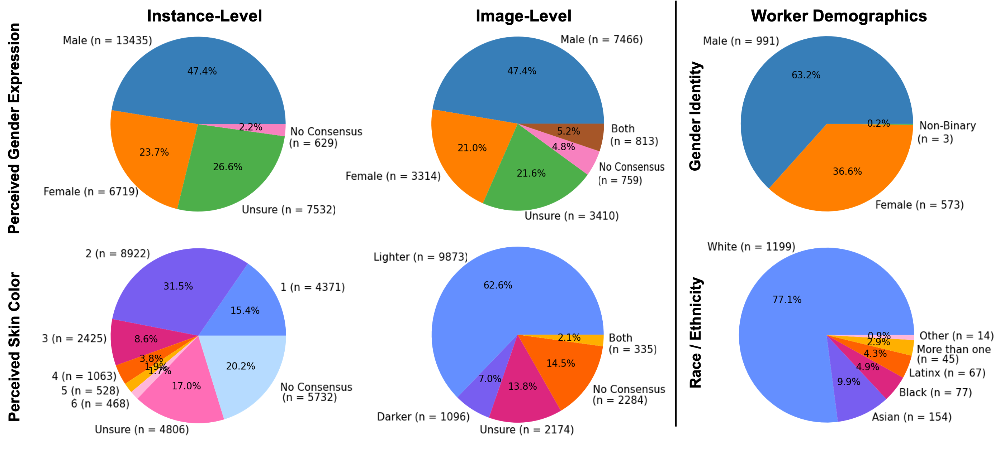
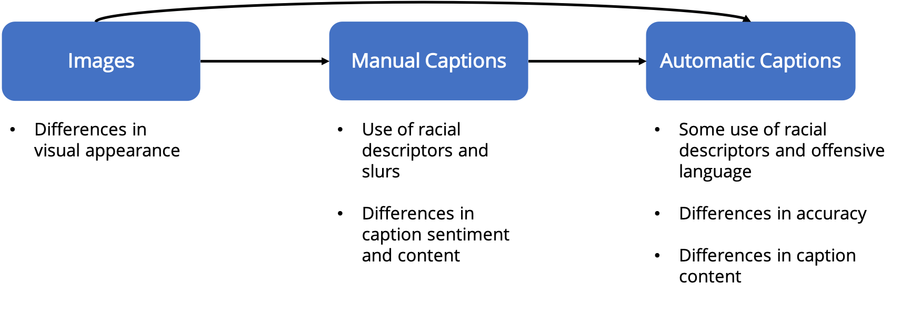

Understanding and Evaluating Racial Biases in Image Captioning
Abstract
Image captioning is an important task for benchmarking visual reasoning and for
enabling accessibility for people with vision impairments. However, as in many
machine learning settings, social biases can influence image captioning in undesirable ways.
In this work, we study bias propagation pathways within image captioning, focusing
specifically on the COCO dataset. Prior work has analyzed gender bias in captions;
here we focus specifically on racial biases. Our first contribution is in annotating the skin
color of 28,315 of the depicted people after obtaining IRB approval. Using these annotations,
we compare racial biases present in both manual and automatically-generated captions,
focusing specifically on differences between images depicting people with lighter versus darker skin.
We observe differences in caption accuracy, sentiment, and word choice. Most importantly,
we find that modern captioning systems exhibit stronger biases than older models ---
thus, social bias concerns are likely to become increasingly prevalent in image captioning.
Citation
@article{zhao2021captionbias,
author = {Dora Zhao and Angelina Wang and Olga Russakovsky},
title = {Understanding and Evaluating Racial Biases in Image Captioning},
year = {2021}
}
Demographic annotations on COCO
We crowdsource skin color and gender annotations on the COCO 2014 validation set
using Amazon Mechanical Turk (AMT). We use the Fitzpatrick Skin Type Scale, which ranges from
1 (lightest) to 6 (darkest) to measure skin color, and the binary perceived gender expression.
In total, we collect annotations for 15,762 images and 28,315
person instances.

(Left column): Distribution of perceived skin color and gender expression of the
28,315 people instances.
(Middle column): Distribution after collapsing individual annotations into image-level annotations
(Right column): Distribution of self-reported demographics for AMT workers.
The annotations will be available for download upon request.
Analysis
Using the crowdsourced demographic annotations, we consider both the ground-truth images
and manual captions as well as the automatically generated captions.

Our analysis shows that not only does bias exist in the ground-truth data, beyond just
the underepresentation of certain skin tone groups, but also that this bias is propagating
into the generated captions. Furthermore, we find that newer and more advanced image
captioning models tend to exhibit more bias.
We provide an in-depth analysis of these bias propagation pathways in our paper.
Acknowledgements
This work is supported by the National Science Foundation under Grant No. 1763642
and the Friedland Independent Work Fund from Princeton University's School of
Engineering and Applied Sciences. We thank Arvind Narayanan, Sunnie S. Y. Kim,
Vikram V. Ramaswamy, and Zeyu Wang for their helpful comments and suggestions,
as well as the Amazon Mechanical Turk workers for the annotations.
The webpage template was adapted from this
project page.